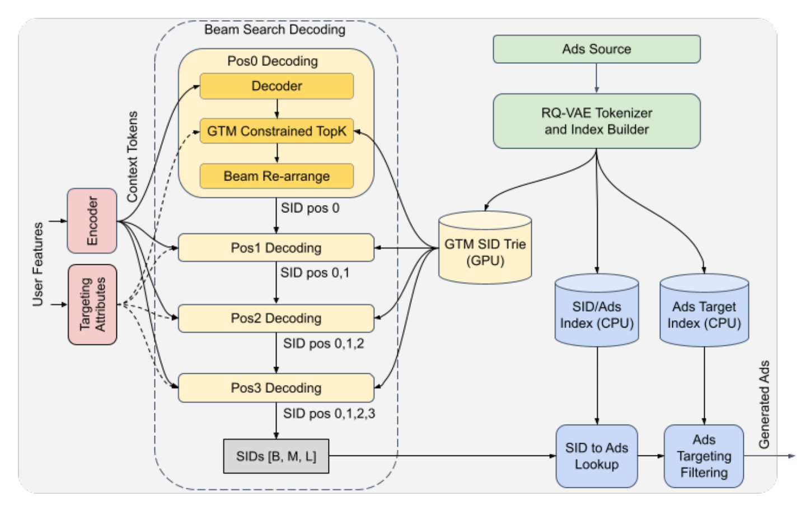
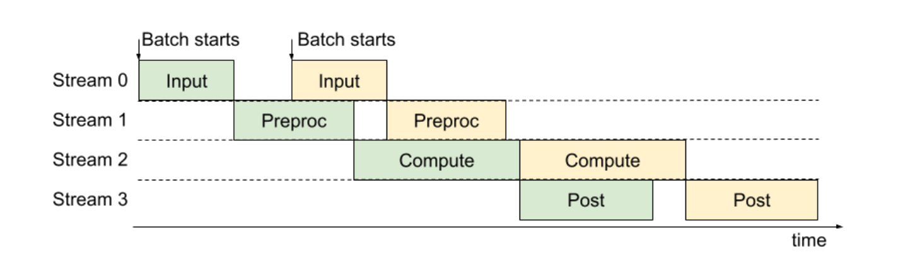
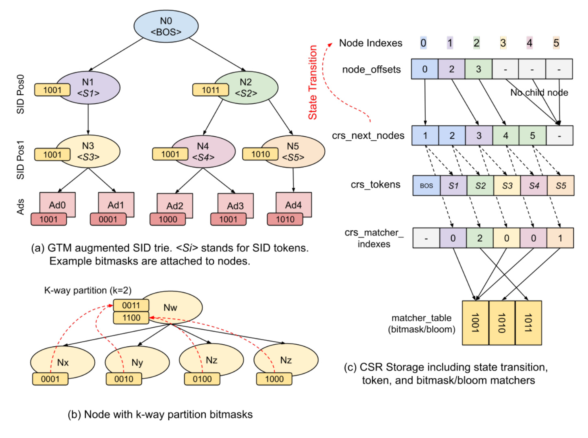
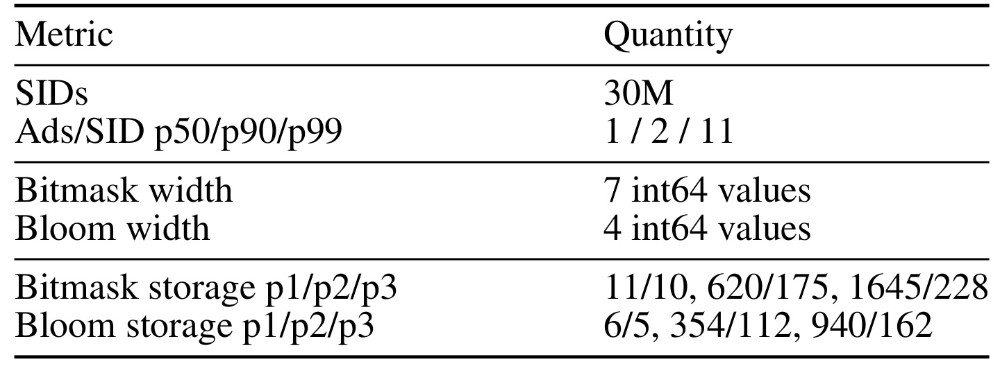
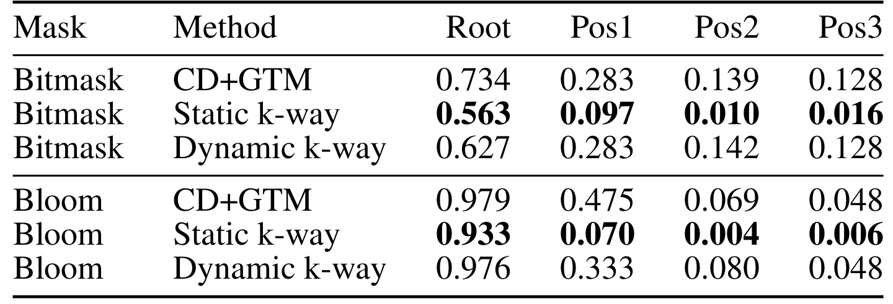
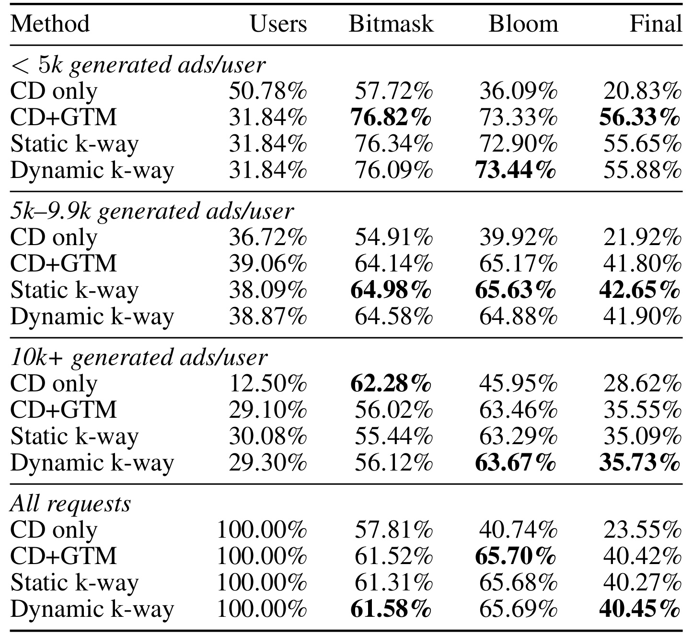
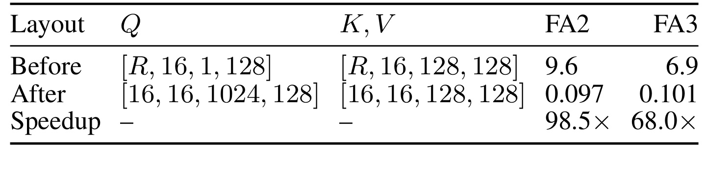
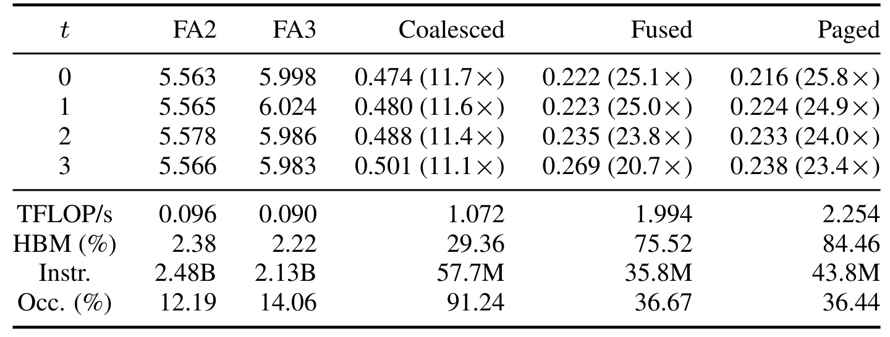
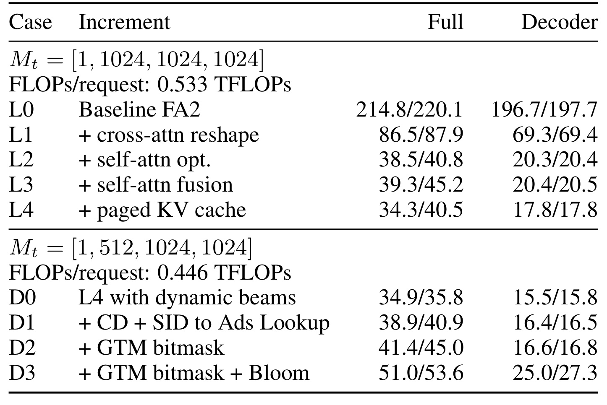

GRACE：面向实时广告生成式召回的资格约束与推理加速
论文： GRACE: Generative Recommender Acceleration Engine for Real-Time Ads Retrieval
作者： Zhou Fang、Yuhang Huang、Ang Zhang、Yihan He、Ruichao Xiao、Chao Li、Yavuz Yetim、Sibyl Yang、Xiaohan Wei、Fei Tian、Liang Wang、Liyuan Li、Nathan Yan、Gaoxiang Liu
公开时间： 2026-08-02
论文入口： arXiv:2608.00938
机构与代码状态： 本轮事实包将其记为匿名评审稿，作者机构未核验；不依据上传账号或其他间接信息反推机构。未核验到官方代码或独立项目页。
这篇论文不讨论怎样训练一个更准的推荐模型，而是追问一个更靠近生产边界的问题：当生成式推荐器直接产出广告的 Semantic ID（SID）时，怎样在每一步解码中遵守当前请求的受众资格，又怎样让四步、宽 beam 的 encoder-decoder 在 GPU 上达到实时服务所需的延迟与成本。GRACE 的答案由两部分组成：Generative Target Matching（GTM）负责把资格过滤前移进受约束解码，自定义注意力、KV cache、beam 与流水线实现负责把这种过滤装进可服务的执行路径。
实时广告生成式召回必须同时解决两个互相牵制的问题：每次请求的可投广告集合会随受众规则变化，因而“生成了目录中存在的 SID”不等于“生成了对当前用户合格的广告”；与此同时，系统还要在严格 GPU 延迟与成本预算内，用宽束搜索生成数千个候选。若只在生成后做资格过滤，大量 beam 计算会消耗在最终必被丢弃的广告上。
1. 背景和问题
1.1 从候选打分变成标识符生成，资格过滤失去了原来的入口
传统广告推荐通常是级联链路。Target Matching 先用地域、年龄、性别等请求属性筛掉不符合广告主受众规则的广告；轻量召回从合格库存中选出较小候选集；后续排序再使用更复杂的特征交互和用户建模。这里的关键不是“相关性够不够高”，而是资格是一条硬约束：一个相关但不允许向当前用户投放的广告，不能进入后续候选。
生成式召回改变了这条接口。模型不再对预先给出的广告集合逐个打分，而是把每个物品表示为长度很短的离散 SID，并自回归地产生下一条 SID。目录约束解码可以保证输出序列确实对应目录里的某个物品，但目录有效性是请求无关的；受众资格则取决于当前用户。对同一个 SID 前缀，用户甲的下一 token 可能仍通向合格广告，用户乙却可能已经没有任何合格后代。如果模型只知道“这个前缀存在于 trie”，它就会把概率与 beam 名额分配给用户无法看到的广告。
一种直观补丁是先把所有生成 SID 展开成广告，再在 CPU 上执行精确 Target Matching。这个步骤仍然必要，因为一个 SID 往往代表一簇广告；即使该簇中至少有一条广告合格，同簇其他广告也可能不合格。但只做事后过滤会产生两个后果。第一，最终通过率低，排序层得到的候选量不稳定；第二，解码器的宽 beam 已经为无资格分支支付了注意力、top-k、KV 重排等成本，无法在后处理中收回。GRACE 因而把任务重新表述为 token 级控制：只要新前缀的子树中不存在任何潜在合格广告，就在 beam 选择前把这个 token 屏蔽掉。
1.2 广告资格不是唯一瓶颈，宽束短序列也不适配通用内核
论文选择轻量 encoder-decoder Transformer，而不是直接使用 LLM。编码器把用户画像、上下文和行为序列转换为 (T_{ctx}=128) 个上下文 token；三层解码器生成长度 (L_{SID}=4) 的 SID，词表大小为 512，使用 16 个注意力头、每头维度 128。为了生成足够多广告，后几步 beam 可达 1024，batch size 为 16，于是解码行数达到 (Bcdot M=16384)。固定 1024 beam 时，每个请求约需 533 GFLOPs。
这不是 FlashAttention 最擅长的长序列形状。交叉注意力面对的是许多长度为 1 的 query，但同一请求的全部 beam 共享一份 encoder KV；自注意力面对的也是单 token query，却只查询 1—4 个 SID 前缀 token，而且每个 beam 的前缀不同。通用内核会执行大量很小的 attention，occupancy、内存合并与 tensor-core 利用都不好。beam top-k 之后还要重排状态：若把每个新 beam 的历史 KV 整块复制，在 16384 行规模下，每步约移动 1.6GB 数据，论文测得约耗时 1.79ms。资格检查若只是额外插入一个低效 kernel，可能改善候选质量，却让整体延迟越过服务预算。
因此 GRACE 的问题不是单一算法问题，而是资格语义、索引结构和硬件执行形状的共同设计。它既要回答“某个前缀是否还可能包含合格广告”，也要回答“如何让上万条短序列并行检查这个条件”，还要保证 encoder、decoder、SID 展开与精确过滤能被流水化。论文把 P99 小于 100ms 作为端到端目标；其中约 30ms 用于积累 16 个用户的 batch，留给输入、特征预处理、核心计算和后处理的窗口约为 70ms。
1.3 论文贡献应该怎样界定
GRACE 的第一项贡献是 GTM：它把目录有效性与请求相关资格合成同一个 decode-time mask。低基数属性使用定长 bitmask，高基数位置使用 Bloom filter，二者都附着在 SID trie 节点或边对应的 matcher 上。第二项贡献是围绕宽 beam、短 SID 定制的执行系统，包括共享交叉注意力 KV 的布局变换、短序列自注意力 Triton kernel、分页 beam KV、CUDA GTM kernel、动态 beam 与多阶段流水线。第三项贡献是把资格效果、kernel 微基准和端到端延迟放进同一套 30M SID 实验。
边界同样重要。论文报告的“最终通过率”是离线模型评估集上，SID 展开后经过广告级精确过滤的比例，不是 CTR、CVR、收入或用户体验；位置属性还使用每用户 64 个随机位置的合成数据。内核结果来自 NVIDIA GH200 与特定四 token、1024 beam 形状。因而它证明的是一条系统设计在该工作负载上可行，而不是任意生成式推荐器都能自动获得相同收益。
1.4 为什么“至少一个合格广告”是合理但不充分的前缀语义
GTM 对一个前缀的判断不是“这个子树中的广告都能投”，而是“这个子树中仍可能有至少一条能投”。这是生成阶段能安全使用的最弱条件。如果要求子树内所有广告都合格，任何混合了不同受众规则的 SID 簇都会在很早的层级被误删，召回覆盖会急剧下降；如果完全不看资格，则又回到 beam 大量浪费在必被后过滤的分支。以存在性条件保留前缀，使解码器可以继续依据学习到的概率在可行子树中搜索，同时把最终广告粒度正确性留给精确 matcher。
这个语义也决定了索引错误的风险方向。bitmask/Bloom 的按位或会产生假阳性：前缀被保留，但展开后广告可能全部被精确过滤，表现为通过率与计算效率下降。真正危险的是假阴性，因为一个本来包含合格广告的前缀若被 GTM 屏蔽，后续阶段无法恢复该候选。论文依靠并集的保守性质避免算法层面的假阴性，但生产环境还存在索引版本落后、规则解析不一致、字段缺失和哈希实现错误。资格系统验收时因而不能只抽查最终广告是否合规，还要用精确索引回放每一步被剪前缀，估计“误剪了多少原本可行的 SID”。
从推荐质量看，GTM 还改变了采样/搜索分布。原始模型学习的是全局 SID 概率，在每个请求上加入资格 mask 后，beam 分数相当于在可行 token 集上重新竞争。若某类用户可投库存很窄，模型可能被迫选择训练中概率较低、表示质量较差的 SID；候选数量增加也不保证相关性增加。因此完整评价至少需要三条漏斗：token 层保留率和 beam 多样性、SID 展开后的广告量与精确资格通过率、下游排序后的相关性与业务指标。GRACE 主要覆盖前两条中的资格和延迟，为第三条留下了明确空白。
这也意味着资格约束不应只由模型团队或内核团队单独验收，而要让广告规则、召回、排序与服务稳定性共同定义正确性基线。
2. 方法
2.1 从请求到广告候选的完整服务链
在线请求包含两类输入。用户特征和行为序列进入 encoder，产生供 decoder cross-attention 使用的上下文 token；国家、年龄、性别、位置等受众属性则送到 GTM matcher。离线侧从广告源数据构建三类索引：GPU 上的 GTM SID trie 保存有效前缀、child token 和资格 matcher；CPU 上的 SID-to-ad index 把完整 SID 展开为广告 id；另一个 CPU Ads Target index 对广告逐条执行精确资格判断。三个索引异步构建，不让索引刷新进入在线关键路径。解码共四步。每一步先由 decoder 给当前 beam 的词表候选产生 log probability，再由融合的 CD+GTM kernel 同时剔除不存在于 SID trie 的 token 和对当前请求已无合格后代的 token；存活 token 与前缀累计分数相加，top-k 选择下一步 beam，并重排 token、分数与 KV 状态。完整 SID 产生后，CPU 执行 SID 展开与广告级精确过滤，剩余广告再进入后续召回/排序栈。GTM 不是精确后过滤的替代品，而是把明显无资格的 SID 分支提前剪掉；精确过滤负责处理同一 SID 簇内部仍不合格的广告。

Figure 1 左侧把用户特征与 targeting attributes 分成两条信号流：前者进入 encoder 形成上下文，后者以虚线进入每个 SID 位置的资格检查；中间四步 beam search 都会读取 GPU GTM trie，而不是只在最后一步检查完整 SID。右侧显示同一份广告源如何派生 GPU trie、CPU SID/Ads 映射与 CPU 精确 targeting index。读图时最重要的是底部的两段后处理：SIDs 先展开为广告，再做精确过滤。这说明 GTM 的语义是“该前缀下至少还有一个可能合格广告”，不是“该 SID 下所有广告都合格”。这种保守剪枝避免误删潜在候选，但也解释了为什么仍会有 false positive，以及为什么论文选择广告级 pass rate 作为最终资格指标。
2.2 动态宽束搜索与多阶段流水线
固定 beam 在四步都用 (M=1024)，但第一步只有一个初始状态，词表也只有 512 个 token，最多只可能产生 512 个不同前缀。GRACE 采用每步 beam ((M_1,M_2,M_3,M_4)=(1,512,1024,1024))。第一步只算一行 decoder，第二步才扩到 512，后两步使用 1024；实验中 GTM 过滤后第一位置平均只有 492.6 个唯一合格 beam，因此这个调度没有在根部预留不可能填满的槽位。论文估算它把四步请求计算量从 533GFLOPs 降到 446GFLOPs，减少 16.2%。这里的收益不依赖重新训练，因为 beam 配置只改变推理时保留多少前缀。top-k 后的 KV 状态也不再整体复制。GRACE 为 self-attention 使用物理 block pool 和逻辑 block table (P)。若新 beam (i) 来自父 beam (p_i)，历史位置只复制 block id：
符号解释：(P_{p_i,j}) 表示父 beam 在 SID 位置 (j) 对应的物理 KV block，(t) 是当前解码步。新 token 的 KV 写入新 block；共享父前缀的多个子 beam 可以复用过去 block id。代价是读取不如密集重排连续，但它把 1.6GB 级 KV copy 变成小整数表复制，正适合 SID 极短、beam 极宽的形状。运行时又把单批的顺序执行改成跨批流水。输入/传输、embedding 密集的特征预处理、encoder 与完整 decoder、SID 展开与精确过滤分别放在 Python threads 和 CUDA streams；TorchScript、CUDA Graph 和 C++ 后处理减少 GIL 与 launch 开销。单个 batch 仍按依赖次序通过四阶段，不同 batch 则交错，使 compute-intensive stage 可连续运行，其他较低 MFU 阶段尽量被隐藏。

Figure 2 的横轴是时间，纵向四条 stream 分别承载 Input、Preproc、Compute、Post。绿色与黄色代表相邻 batch：当第一批进入 Compute 时，第二批已经能做 Preproc；第一批进入 Post 后，第二批 Compute 紧接着运行。图没有声称所有阶段完全并行，也没有把依赖删除，而是在跨请求 batch 上错开不同资源压力。它对工程实现的启示是，MFU 较低的 embedding/后处理不一定要单独极致优化；若能与高 MFU decoder 在不同 stream 重叠，更关键的目标是让核心计算不出现气泡。不过这一收益依赖实际算子间资源竞争，论文只报告“没有可测回归”，迁移到另一 GPU 或更重后处理时仍需重新 profile。
2.3 GTM：把广告受众资格前移进解码
设当前 beam 对应 SID trie 前缀 (p)，候选下一 token 为 (v)。目录约束先判断 (v) 是否是 (p) 的合法 child，资格约束再判断扩展后的子树是否仍包含当前请求可能投放的广告；二者都在 top-k 之前执行，避免非法或无资格 token 获得下一步 beam：
符号解释：(CD_t[v]) 是第 (t) 步的目录有效性指示器，取 1 表示扩展前缀 (p\Vert v) 仍是至少一个目录 SID 的前缀。它只回答“目录里有没有”，不使用当前用户。GTM 则读取请求属性 (u)，判断新前缀子树是否含潜在合格广告；相同 child 对不同用户可以得到不同结果：
符号解释：(TM_t[v]) 是请求相关资格指示器；(mathrm{match}) 读取前缀节点保存的 bitmask/Bloom matcher。它不是训练得到的新打分器，而是由广告规则与用户属性确定的布尔判断。目录与资格两个条件共同修改 decoder 给出的 log probability：
符号解释：(L_t[v]) 是 decoder 对 token (v) 的对数概率。被置为负无穷的候选不会进入 beam top-k；这个操作在选 beam 前发生，所以无资格分支既不占下一步 beam，也不继续消耗 decoder 算力。对国家、年龄、性别等低基数属性，每条广告的允许值编码成若干 64-bit words，节点 matcher 是其子树广告 bitmask 的按位或：
符号解释：(A(p)) 是前缀 (p) 子树代表的广告集合，式中的并集算子把所有广告允许值按位合并；某一属性位只要被任一后代广告允许，就会出现在节点 matcher 中。用户要通过某个 child，则其全部低基数属性位都必须被该节点并集覆盖：
符号解释：用户每个已观察的低基数属性位都必须出现在节点并集里。这个判断是保守的：不同广告可能分别贡献国家位和年龄位，使并集看似覆盖用户，但没有任何单条广告同时满足两者。因此它允许 false positive，却不会因为并集缺位而错删真实可行分支。位置等高基数属性改用 256-bit Bloom filter，即四个 int64；对用户位置字符串 (ell_j)，包含测试为：
符号解释：(B) 是节点 Bloom matcher，用户可以带多个位置；kernel 逐个扫描位置，一旦任一位置通过就保留 child，并提前终止外层扫描。节点 matcher 仍遵循保守子树并集，将所有后代广告的 Bloom filters 按位或构建：
符号解释：并集能高效覆盖子树，但同时带来子树混合和哈希碰撞两类假阳性。论文尝试 k-way partition：把节点后代拆为 (k) 组，各组单独做并集，只要任一组匹配就保留。static k-way 按解码位置固定 (k)，dynamic k-way 为每个节点尝试达到 fill-rate 目标。它降低单个 matcher 饱和度，却增加存储和检查次数。

Figure 3(a) 用玩具 SID trie 表示前缀节点如何携带后代广告的 bitmask 并集；(b) 把宽泛并集拆成两个 partition，减少彼此无关广告位的混合；(c) 则展示真正适合 GPU 的存储：node_offsets 给出每个节点的连续 child range，CSR child nodes 和 tokens 表示状态转移，matcher indexes 指向去重后的 bitmask/Bloom 表。解码 kernel 以一个 CUDA block 处理一个 beam，线程并行扫描其 child entries；用户 mask 先装进 shared memory，先做更便宜且可早停的 bitmask，再只对通过者做 Bloom ANY-of-many 扫描。这个顺序把资格语义映射成规则、连续且可早停的访存，而不是在每个候选上运行通用索引查询。
2.4 为宽束短序列定制注意力形状
cross-attention 中，同一请求的 (M) 个 beam 有不同 query，却共享 encoder KV。通用布局把它们视为 (BM) 次独立单 query attention，既重复表示请求级 KV，也把计算切成上万次很小的矩阵操作；基线张量形状为：
GRACE 保留请求级 (K,V\in\mathbb{R}^{B\times H\times T_{ctx}\times d_h})，把 beam 维移动到 query sequence，使一个请求的全部 beam query 在同一次 SDPA 中读取同一份上下文 KV：
符号解释：(B) 是 batch size，(M) 是该步 beam 数，(H) 是 head 数，(d_h) 是 head 维度，(T_{ctx}=128)。SDPA 因而一次处理同一请求的 (M) 个查询并复用一份上下文 KV，输出再逆变换回 beam-major。附录给出逐行映射，说明它只改变 layout，不混合不同请求，也不改变注意力结果。
self-attention 不能共享 KV，因为每个 beam 前缀不同。GRACE 将多个相同短长度的 beam row 合并到一个较大 Triton tile，用 block-diagonal mask 阻止跨 beam 注意。若合并 (G=4) 行、每行历史长度 3，kernel 实际计算 (4\times12) tile，只有对角块有效；有用算术比例虽只有 (1/G)，但比大量 (1\times3) 小操作更能形成合并访存和占用率。再进一步把 cache write、reshape、短 prefix gather 与 attention 融进一个 Triton kernel，QKV 与输出 projection 仍由 cuBLAS 执行。这是一种用少量冗余算术换取规则 tile 和更少 launch/中间张量的硬件交易，不应理解为减少模型层数。 最后，CD+GTM 使用 CUDA 而非 Triton，以便精细控制 shared-memory staging、每候选线程分配和早停。完整固定长度解码环又被 CUDA Graph 捕获，包含 decoder forward、资格 mask、top-k 和 beam rearrangement。至此，GRACE 的方法链形成闭环：GTM 决定哪些 token 值得继续，自定义 attention 让宽束短序列不再浪费通用 kernel，paged KV 让 top-k 重排便宜，流水线让这些高计算阶段保持连续。
3. 实验结果
3.1 实验口径：模型、索引、硬件与指标
资格实验使用模型评估集的用户特征，并为每个用户合成 64 个随机位置，索引覆盖 30M SIDs。模型采用三层 decoder、四 token SID、词表 512、16 heads、head dimension 128、encoder context 128。性能测量运行在 NVIDIA GH200，batch size 16。两个核心评价面彼此独立：资格面看生成 SID 展开成广告后，CPU 精确广告级 Target Matching 的通过率；系统面看 attention/GTM kernel 微基准与完整推理的 P50/P99。前者并不直接衡量推荐相关性，后者也没有比较跨硬件成本。

Table 1 给出资格索引的规模约束。每个 SID 对应广告数的 p50/p90/p99 为 1/2/11，说明簇大小有长尾，也解释了“一个 SID 至少含一个合格广告”为什么不能替代广告级精确过滤。bitmask matcher 宽 7 个 int64，Bloom matcher 宽 4 个 int64。在 p3 完整 SID 转移层，去重将 bitmask 存储从 1645MB 压到 228MB，Bloom 从 940MB 压到 162MB；p2 也分别从 620/354MB 降到 175/112MB。表格证明 matcher row 复用对显存占用很关键，而且最后一层重复最明显；但它没有给出索引构建时长、在线增量刷新成本或广告规则变化频率，这些仍是重要的落地缺口。
3.2 资格过滤：通过率提升，但 k-way 未转化为最终收益
论文比较四种解码过滤。CD only 只保证目录 SID 有效；CD+GTM 使用未分区的 bitmask 与 Bloom matcher；Static k-way 对四个解码位置采用固定 ((64,64,32,8))；Dynamic k-way 每节点独立选择 (k\le32)，目标 fill rate 为 0.25。fill rate 是 matcher 中置 1 位的比例，越低通常越选择性强。

Table 2 显示 Static k-way 的确显著降低中后段饱和度：bitmask Pos2 从未分区的 0.139 降到 0.010，Pos3 从 0.128 降到 0.016；Bloom Pos1 从 0.475 降到 0.070，Pos2 从 0.069 降到 0.004。Dynamic k-way 效果弱得多，多个位置接近未分区方案，作者解释为它经常选择较小 (k)。Root 到 Pos3 的列顺序还显示，越接近完整 SID，静态分区越能把宽泛并集拆细。它降低了位饱和带来的宽松匹配，却同时引入更多 matcher rows 与检查。这张表只说明内部 matcher 更稀疏，并不能证明最终广告资格更好，因为 k 个分区的结果最后仍取并集；只要任一 partition 匹配，前缀就被保留。

Table 3 是资格效果主证据。全部请求上，CD only 的最终广告级 pass rate 为 23.55%，CD+GTM 提升到 40.42%；Static 与 Dynamic k-way 分别为 40.27% 和 40.45%，几乎没有进一步收益。分桶后差异更明显：展开广告少于 5k 的请求，最终通过率从 20.83% 升到 56.33%；5k—9.9k 桶从 21.92% 升到 41.80%；10k+ 桶从 28.62% 升到 35.55%。同时，请求分布也改变：<5k 桶用户占比由 50.78% 降至 31.84%，10k+ 桶由 12.50% 升至 29.10%，说明 GTM 不只是对相同 SID 做后验标记，而是把 beam 引向能展开出更多合格广告的不同 SID。
bitmask 和 Bloom 都有贡献。例如 <5k 桶中，bitmask 阶段 pass 从 57.72% 到 76.82%，随后 Bloom pass 从 36.09% 到 73.33%。不过 k-way 的负结果值得重视：虽然单 matcher fill rate 大幅降低，分区结果的 OR 使最终 pass rate 基本不变，却要支付更多存储和 kernel 检查。因此论文选择未分区 CD+GTM 作为操作点。这是一条很实际的消融结论——中间代理指标改善不等于端到端业务约束改善。
证据仍有限。位置是合成的 64 个随机值，可能无法复现真实地域层级、缺失值与规则共现；pass rate 只表示被展开广告通过精确资格过滤的比例，不告诉我们候选相关性或覆盖是否损失。GTM 有可能把 beam 从高概率但无资格 SID 转向低概率合格 SID，最终排序质量需要在线实验才能判断。论文也没有报告 false negative 审计；按并集构造理论上保守，但实际索引更新、Bloom 实现和规则编码错误仍需独立验证。
3.3 内核微基准：收益来自工作负载形状匹配

Table 4 把 cross-attention 的收益与张量形状绑定。重排前，(Q=[R,16,1,128])，(K,V=[R,16,128,128])，其中 (R=16\times1024)；FA2/FA3 延迟为 9.6/6.9ms。重排后，Q 变成 ([16,16,1024,128])，K,V 只保留请求级 ([16,16,128,128])，延迟降至 0.097/0.101ms，对应 98.5x/68.0x。如此大的倍数来自基线把共享 KV 复制到 beam 行并执行大量小 attention，而不是论文找到了一种普遍比 FlashAttention 快 68 倍的注意力。若 beam 很窄、上下文很长或请求间 beam 不齐，这个布局的收益需要重新测量。

Table 5 展示 self-attention 的逐层优化。FA2/FA3 在四个解码步约为 5.56—6.02ms；Coalesced kernel 降到 0.474—0.501ms，Fused 到 0.222—0.269ms，Paged 为 0.216—0.238ms，相对 FA2 报告 23.4—25.8x。硬件计数器让因果更可信：在 (t=3) 时，FA2 执行 2.48B instructions、HBM 仅达峰值 2.38%，Paged 为 43.8M instructions、HBM 达 84.46%。Coalesced 的 occupancy 为 91.24%，Paged 虽只有 36.44%，但减少历史 KV copy 后带宽利用更高，最终 latency 更低。
这里也有一个看似反常的细节：Fused 在 (t=0) 稍慢于 Paged，而 (t=1,2) 有时略快；paged layout 不是每步都在纯 attention 上绝对占优，它的系统价值主要是避免 beam 重排复制，并在端到端累计中受益。微基准基线取 FA2/FA3 中更快者，但没有展示其他专门短序列 kernel，也没有跨 A100、H100 或 B200 验证。读者应该把结果理解为“形状感知的定制实现消除了通用 kernel 的严重不匹配”，而不是固定可迁移的速度常数。
3.4 端到端延迟：每项优化如何叠加

Table 6 的第一块保持固定 ([1,1024,1024,1024]) beam，按增量加入优化。FA2 基线 decoder P50/P99 为 196.7/197.7ms，完整路径 214.8/220.1ms，已经超过预算。cross-attention reshape 是最大单步收益，decoder P50 降到 69.3ms；self-attention 优化进一步到 20.3ms；fusion 没有继续改善，P99 反而由 20.4 升到 20.5ms，说明单项优化并非严格单调；paged KV 最终把 decoder 稳定在 17.8/17.8ms，完整 P99 为 40.5ms。作者所称 decoder 11.1x 来自 197.7 到 17.8ms。
第二块采用动态 beam ([1,512,1024,1024])，请求 FLOPs 由 0.533 降到 0.446TFLOPs。仅 dynamic beam 的 D0 decoder P99 为 15.8ms、完整 P99 35.8ms；加入 CD 与 SID-to-ads lookup 后为 16.5/40.9ms；加入 bitmask GTM 后为 16.8/45.0ms；再加入 Bloom 时 decoder P99 增到 27.3ms，完整 P99 为 53.6ms。也就是说，完整资格语义不是“免费”的，Bloom 增量明显，但 53.6ms 仍低于 batch accumulation 后约 70ms 的计算窗口，也让端到端总目标保有余量。
作者用下式报告 decoder MFU：
符号解释：(mathrm{FLOPs}{mathrm{req}}) 是单请求模型 FLOPs，(B) 是 batch size，(t) 是 GH200 Hopper BF16 的 989TFLOP/s 理论峰值。D0 的 decoder MFU 为 46.6%；完整 GTM 因加入不计入模型 FLOPs 的 matcher 工作，降到 28.8%。MFU 下滑不代表系统退化，因为 D3 同时提供资格过滤且仍满足窗口；但它提醒我们仅用模型 FLOPs 衡量带大量规则检查的推荐系统，会低估非 GEMM 成本。}}) 是 batch 平均 decoder 时间，(mathrm{peak
综合看，论文的系统证据链较完整：Table 3 证明资格通过率改变，Table 4/5 证明定制 kernel 修复特定形状，Table 6 证明这些模块叠加后仍在预算内。但它没有给出真实线上 QPS、单位请求 GPU 成本、跨流并发下的尾延迟分布、索引刷新期间的一致性，也没有与 ANN/传统召回在相同广告覆盖与质量下比较。53.6ms 是模型与后处理的报告结果，不等于生产端从网络入口到排序层的完整用户延迟。
3.5 把资格收益与延迟代价放在同一条漏斗里
从 Table 3 与 Table 6 联合看，GTM 的价值并非把 decoder 变快。D0 在没有完整资格检查时 decoder P99 为 15.8ms；加入 CD、SID 展开、bitmask 与 Bloom 后升到 27.3ms，增幅显著。系统愿意支付这笔代价，是因为最终广告级通过率从 23.55% 升到 40.42%，让下游获得更多实际可用候选。若只看 latency，D0 更优；若只看 pass rate，又会忽略 Bloom 将完整 P99 从 45.0ms 推到 53.6ms。正确的服务目标应是单位可用候选的 GPU 时间，或在固定延迟/成本预算下进入排序的合格且相关广告数。论文没有直接报告这个联合指标，但两张表提供了计算它所需的主要分子与分母方向。
固定 beam 的 L0—L4 也说明优化不能按单个 kernel 倍数线性相乘。cross-attention 微基准给出最高 98.5 倍，但完整 decoder 只从 196.7ms 降到 69.3ms，因为系统还有 projection、self-attention、top-k、重排和框架开销。self-attention kernel 又从局部 23 倍转化成 decoder 69.3 到 20.3ms；fusion 的 L3 甚至比 L2 略差，paged KV 才把重排收益兑现到 17.8ms。这里的经验是每个优化都必须在完整 trace 中重新定位瓶颈，不能用微基准的倍数估算端到端结果。
尾延迟证据还需要按阶段解释。D3 decoder P50/P99 为 25.0/27.3ms，差距不大；完整路径则为 51.0/53.6ms，说明在论文的批处理与固定形状条件下抖动受控。但真实流量的请求级合格 child 数、位置条数和 SID 簇大小会变化，GTM kernel 的 block 完成时间又由最慢候选决定，Bloom outer scan 只有命中后才早停。合成的每用户 64 个位置可能让 workload 形状比线上更规则，也可能更重，方向无法仅从论文确定。生产复现应按 child range、Bloom 扫描次数和命中位置分桶 P99，而不是只报告全局均值。
最后，资格通过率上升的分桶结构暗示需要检查公平与覆盖。<5k 展开广告请求的通过率提升最大，但这类请求占比从 50.78% 下降到 31.84%；部分请求被移入 5k 或 10k+ 桶，说明 GTM 在不同 SID 簇之间重新分配候选。应继续观察库存较小地域、稀有受众组合和新广告是否因前缀并集结构获得不同的 beam 机会。若可投库存越大越容易保留前缀，系统可能偏向大簇与热门广告；如果 tokenizer 本身已不平衡，这种偏差会与资格 mask 叠加。论文没有给出按用户/广告群体的覆盖分析，不能从总体 40.42% 推导所有群体都受益。
复现实验还应补一个质量守恒检查：在相同最终合格候选数下，比较 CD only 扩大 beam 后的结果与 CD+GTM，才能区分“资格感知搜索本身更好”与“只是生成了更多 SID”两种解释。还可固定 GPU 时间，让两种方案各自选择 beam，比较精确过滤后候选的相关性和多样性。如果 GTM 只提升 pass rate，却让 SID 更集中于少数大簇，排序层可能得到更多重复或近似广告；反之，若它在相同计算下提高合格候选覆盖，才形成更强的服务收益。当前实验没有给出 SID 去重后的广告覆盖、每请求独立广告数或候选相似度，因此 40.42% 应被读作资格效率指标，而非完整召回质量指标。
此外应分别报告冷启动广告与短生命周期广告，因为异步索引最容易在这些样本上陈旧；总体均值可能掩盖刚上线库存的资格错配和曝光缺失。
4. 总结
4.1 我的判断
GRACE 最有价值的不是某个单独的 CUDA kernel，而是把生成式推荐的“输出空间”改造成请求相关可行域。目录 trie 只表达全局库存，GTM 用用户属性为每次请求投影出可探索前缀；事后精确过滤继续承担广告粒度正确性。这个两层设计兼顾了保守性与效率，也给其他受硬约束的生成式召回提供可迁移范式，例如地域可用、年龄合规、版权区域、库存状态或商家配送范围。
系统侧则说明，生成式推荐常见的 SID 长度和宽 beam 与 LLM 长上下文完全不同。直接复用通用 attention/serving stack 可能把架构可行性误判为成本不可行；围绕共享 encoder KV、短 self-attention、beam parent 关系与固定解码步做 layout 和 cache 设计，才是主要收益来源。论文真正连起来的是“资格约束使候选更可用”与“形状优化为资格约束腾出延迟预算”两条链，而不是只追求离线推荐精度或 kernel 跑分。
4.2 对推荐系统与大模型工程的启发
对广告/推荐召回，首先应把硬规则区分为请求无关目录约束和请求相关资格约束，避免把所有规则都塞进训练 loss 或事后过滤。其次，评价 GTM 类方案不能只看 matcher fill rate；Table 2 与 Table 3 已证明更稀疏的中间掩码未必带来更高最终 pass rate。应同时监控候选量分布、精确过滤通过率、相关性、覆盖、尾部广告曝光与 GPU 成本。再次，SID 聚类粒度会直接决定假阳性：一个 SID 下广告越多，前缀“至少一个合格”的条件越松，精确后过滤压力越大，因此 tokenizer/聚类设计与服务资格索引不能割裂。
对大模型和 Agent 服务，GTM 的 trie matcher 可以类比工具权限、租户资源范围或安全策略的 token-time constrained decoding：如果一个前缀已不可能导向合法工具/资源，就在采样前屏蔽，而不是生成完整调用后拒绝。beam-as-query 也提示，只要多个推理分支共享同一上下文 KV，就可以尝试把分支变成 query sequence 维；但长 CoT、动态长度或跨分支 cache 差异会破坏 GRACE 的假设，不能直接照搬倍数。
4.3 局限与风险
- 数据与业务外推有限。 用户位置是每人 64 个随机值，最终 pass rate 不是在线 CTR/CVR、收入或用户满意度；没有证据证明候选相关性无损。
- 硬件与形状高度专用。 68x、23.4—25.8x 来自 GH200、batch 16、四 token SID 和后段 1024 beam。换 GPU、长 SID、窄 beam 或更长上下文，瓶颈可能完全改变。
- 索引一致性未被充分评估。 广告受众规则动态变化，而 GTM trie、SID-to-ad 与精确 targeting index 异步构建；版本错位可能造成短时资格错误。论文没有报告构建时长、增量更新、回滚与一致性协议。
- Bloom 与子树并集仍有假阳性。 它们不会像精确规则一样表达属性共现，k-way 又没有提升最终 pass rate；规则更复杂时，matcher 宽度、kernel 分支和存储可能快速增长。
- 匿名稿与复现条件不足。 事实包未核验作者机构，官方代码也未核验；关键 CUDA/Triton 实现、索引构建器与数据均不可直接复现。
- 缺少强系统对照。 实验主要比较 FA2/FA3 与自家增量版本，没有在同等候选质量下比较成熟 ANN/传统广告召回，也未给出每 QPS 成本和跨机部署。
4.4 后续跟进
- 复现 Table 3 的资格漏斗。 在真实受众规则分布上同时记录 token mask 率、SID 展开量、广告级精确通过率、召回相关性和覆盖，确认合成位置没有高估 GTM。
- 做索引版本一致性实验。 人为制造广告规则更新、SID 重分配与 trie 延迟，测量 false positive/false negative、回滚时间和对下游排序候选的影响。
- 跨形状重跑 Table 4—6。 系统扫描 beam、SID 长度、context 长度、batch 和 GPU 型号，找出 beam-as-query、coalesced self-attention 与 paged KV 的适用边界。
- 等待代码或后续评审版本。 重点核验 GTM kernel 早停策略、Bloom 参数、dynamic k 选择和 CUDA Graph 中的动态性，确认当前报告数值能否独立重现。
总的来说，GRACE 给出了生成式广告召回从“能生成 SID”走向“能实时生成合格广告”的具体系统方案。它的资格通过率和 GH200 延迟结果支持在当前实验形状下的可行性，但线上业务价值、跨硬件迁移与动态索引正确性仍需后续证据。